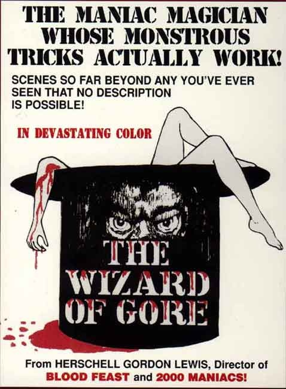

Herschell Gordon Lewis was born in Pittsburgh, Pennsylvania in June 15, 1926. In 1953, Lewis began working for a friend's advertising agency in Chicagoe began directing TV commercial advertisements for a small production company called Alexander and Associates. Lewis later bought out half of the company with business associate Martin Schmidhofer and renamed it Lewis and Martin Films.Lewis served as producer on his first film venture, The Prime Time 1959
He wolud directing duties on nearly all of his films from then on
© Created by Amanda